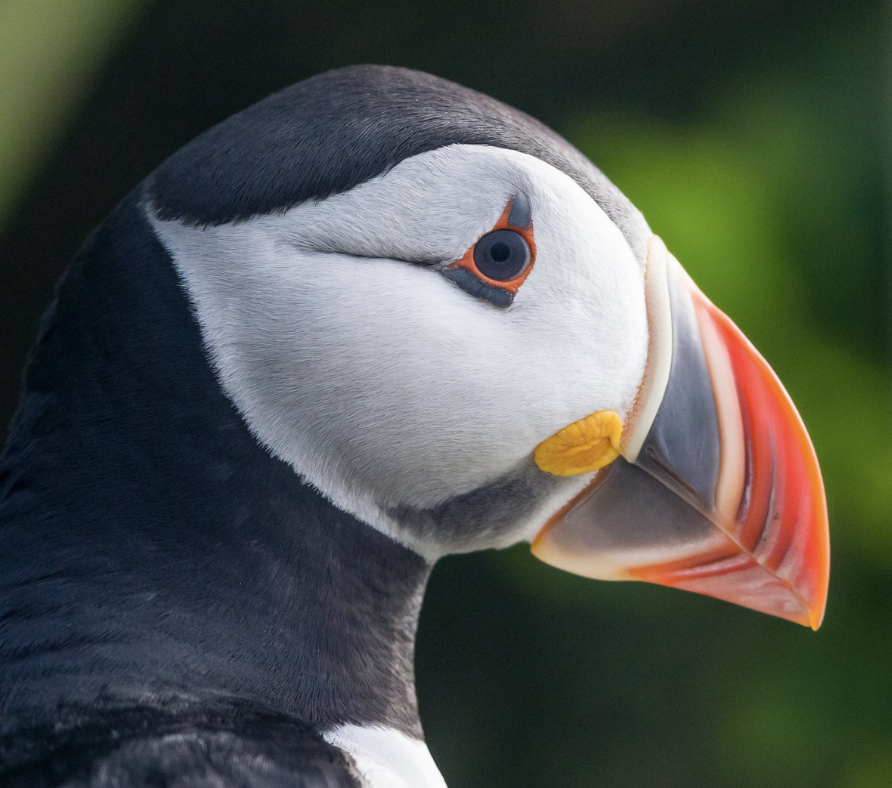
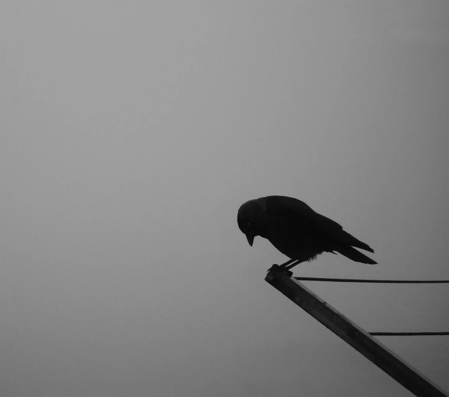
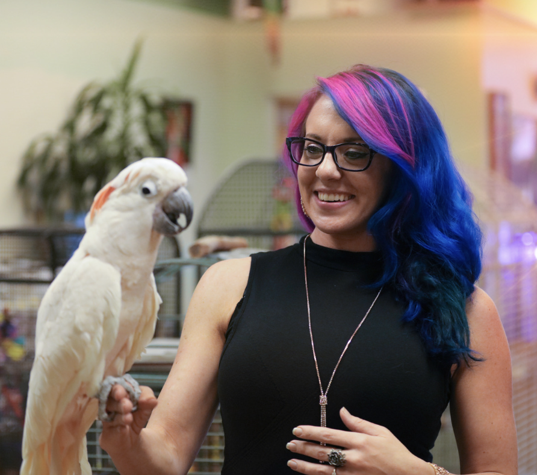
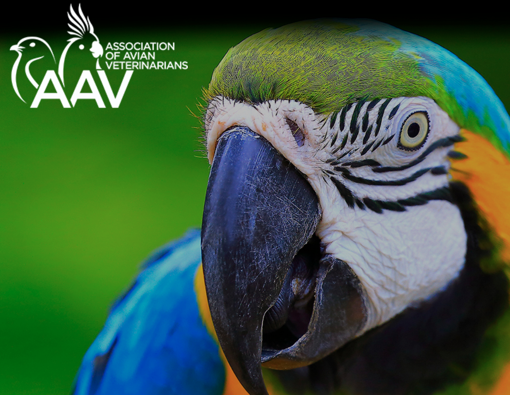
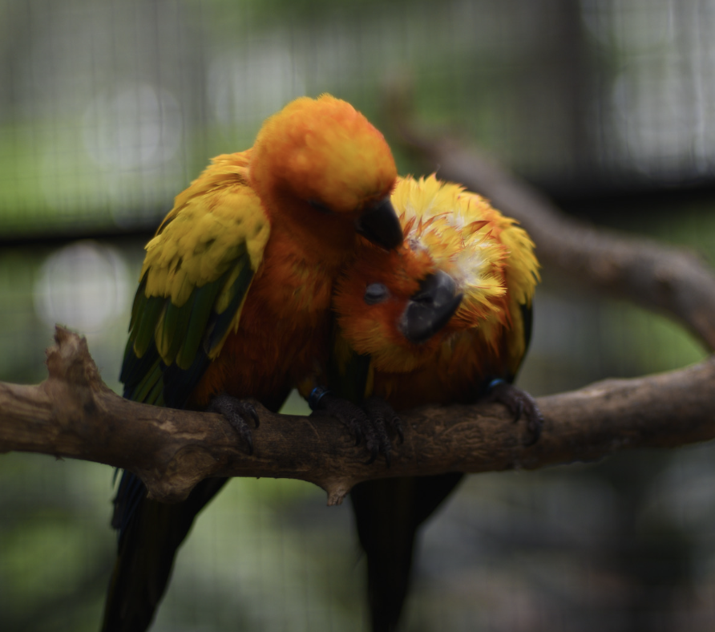

Birds, captivating creatures known for their ability to fly, come in a vast array of species with unique characteristics and dietary needs. While the exact date of bird domestication remains uncertain, they have been cherished as pets for centuries. Popular pet bird species include parakeets, cockatiels, lovebirds, canaries, finches, and parrots. To ensure their well-being, it's important to provide a balanced diet consisting of seeds, grains, fruits, vegetables, and fresh water. Additionally, birds require mental and physical stimulation, a clean environment, and regular veterinary care for optimal health.

Birds are very intriguing creatures as they can range from birds as small as a Cuban bee hummingbird
(about two inches long and a little over 1/20 of an ounce) to as large as an ostrich. While most
birds
fly, there are some that don't. Birds are amazing and each breed is unique in its own way,
particularly
when it comes to their relational needs and well-being. Unfortunately, birds can experience sadness
and
depression just like humans. A number of root causes may be responsible for your bird's depression
such
as an illness (either physical or mental), losing its companion, or increasingly becoming bored.
Some signs to help identify if your bird is experiencing depression may include the following:
• reduced appetite
• becoming increasingly irritable
• aggressive behavior
• songs have a different, more solemn tone
Be sure to tell your veterinarian if you see signs of any of these symptoms. Just like many
illnesses, identifying and treating the symptoms earlier may drastically increase the lifespan of
your birdie.

Birds, just like humans and other animals, can experience depression. Factors such as social isolation, lack of mental stimulation, and changes in their environment or routine can contribute to feelings of sadness and apathy in birds. Signs of avian depression may include decreased activity, loss of appetite, feather plucking, excessive sleep, and withdrawal from social interaction. It is important for bird owners to be attentive to these signs and provide appropriate care, including increased socialization, environmental enrichment, and consultation with an avian veterinarian to address any underlying health issues. Creating a supportive and engaging environment can help alleviate feelings of depression in pet birds and promote their overall well-being.

If you suspect that your bird may be experiencing depression, there are several steps you can take to support and help them. First, ensure that their basic needs are met, including a balanced diet, clean environment, and regular veterinary care. Increase social interaction with your bird by spending quality time together, engaging in activities they enjoy, and providing opportunities for mental stimulation through toys, puzzles, and training exercises. Consider introducing a companion bird if appropriate for their species, as the presence of another bird can provide much-needed companionship. Consult with an avian veterinarian to rule out any underlying health issues and seek their advice on potential treatment options. Remember, patience, love, and understanding are key in helping your bird recover from depression and regain their joyous spirit.

Avian Behavior International: This organization provides information and resources on
bird behavior,
including depression. They have a website with articles, videos, and a forum where you can connect with
other bird owners. Visit Avian-Behavior.org
for more
more information.
The Spruce Pets: This website has a section on bird behavior that includes an article
on how to help a
depressed bird. The article provides tips on providing enrichment, increasing social interaction, and
making sure your bird's environment is comfortable. Visit
TheSprucePets.com for more information.
PetMD: This website has an article on how to tell if your bird is unhappy or stressed.
The article lists
some of the signs of depression in birds, such as feather plucking, loss of appetite, and changes in
behavior. Visit PetMD.com for more
information
The American Association of Parrot Veterinarians: This organization has a website with
information on
bird health, including depression. The website has a list of avian veterinarians who can help you assess
your bird's behavior and develop a treatment plan. Visit AAV.org for
more information.
Please remember that if you are concerned about your bird's behavior, it is always best to consult with
an avian veterinarian.
Social Needs

Birds, just like humans and other animals, can experience depression. Factors such as social isolation, lack of mental stimulation, and changes in their environment or routine can contribute to feelings of sadness and apathy in birds. Signs of avian depression may include decreased activity, loss of appetite, feather plucking, excessive sleep, and withdrawal from social interaction. It is important for bird owners to be attentive to these signs and provide appropriate care, including increased socialization, environmental enrichment, and consultation with an avian veterinarian to address any underlying health issues. Creating a supportive and engaging environment can help alleviate feelings of depression in pet birds and promote their overall well-being.